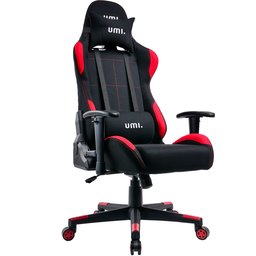
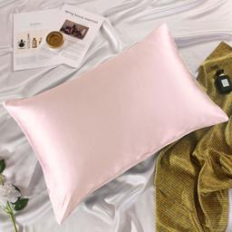
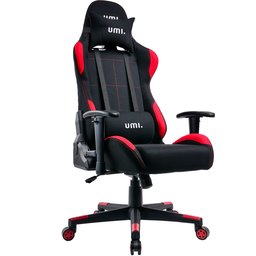
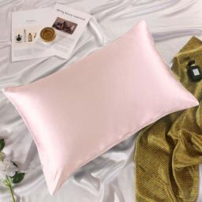
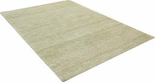
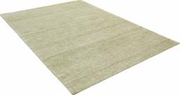
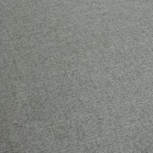
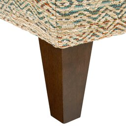
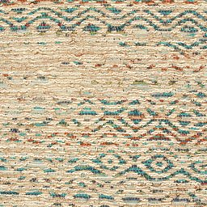

Nicolás Pavón
Clasificando imagenes de Amazon
El problema
En los últimos 20 años, el E-Commerce ha crecido exponencialmente. Basta con solo observar el poder y tamaño de los sitios como Amazon, Alibaba o incluso Mercado Libre para darse cuenta de la importancia que tienen al día de hoy. A partir de esto, podemos concluir que si hay algo que tienen estos gigantes de la informática son muchos datos, y entre ellos, muchas imágenes. Sin embargo, los datos no sirven para nada si no se pueden interpretar y trabajar, por lo que sería útil poder clasificarlos para poder darles un uso apropiado y sacarles todo el provecho posible.
Los datos
Entre todos los datasets disponibles, nos topamos con uno interesante, el Amazon Berkeley Objects (ABO) Dataset. Este dataset nos provee imágenes de aproximadamente 147,000 productos de Amazon, con su correspondiente metadata que incluye su categoría, color, palabras clave, marca, nombre, modelo, etc. Además, provee renders en 3D y algunos otros detalles interesantes. Si bien no hemos explorado aún los datos en profundidad para determinar su pureza, apreciamos el hecho de que provienen de Amazon, por lo que las imágenes son ideales para este problema.
La tecnología
Si bien para este tipo de problemas hoy en día suelen utilizarse los transformers, en este caso utilizaremos redes convolucionales, partiendo de un modelo preentrenado como inception-v3 y aplicando transfer learning, donde quitaremos las capas superiores de clasificación y añadiremos nuevas capas especializadas para esta tarea. Por último, aplicaremos fine-tuning para mejorar la performance. El código fue desarrollado en Google Colab.
El objetivo
Como objetivo nos interesa poder clasificar el producto en la imagen, dando por hecho que la imagen corresponde a un producto de e-commerce. Tomando esto en cuenta y analizando el dataset, observamos la propiedad product_type, la cual tiene alrededor de 574 clases que varían en nivel de precisión, desde “RING” hasta “BISS” (Business, Industrial, and Scientific Supplies). Partiremos de esta propiedad del dataset para entrenar nuestro modelo.
Informacion y estructura del dataset
Estructura del dataset
El dataset
cuenta con varios archivos para descargar, de los cuales nos interesan listings.tar
(Listado de productos y metadata) y images-small.tar
(catalogo de imagenes re escaladas a un maximo de 256 pixeles).
El archivo listings.tar contiene 15 archivos .json, cada uno conteniendo una lista
de objetos, siendo cada objeto un producto de amazon. Utilizaremos un script para pasar la informacion
relevante de estos objetos a archivos .csv, para que sean mas cómodos de trabajar.
Los objetos tienen una serie de atributos, de los cuales nos interesará item_id ,
product_type , main_image_id y other_image_id
Atributos del dataset y estadisticas
Una vez que tenemos el .CSV inicial, procedemos a observar la distribucion de las clases:

Dataset inicial
Como se ve en la imagen, el dataset está totalmente desbalanceado, con muchos ejemplos para ciertas categor√≠as y casi ninguno en otras. Observando los datos en detalle, vemos que hay 574 categor√≠as, de las cuales 460 tienen menos de 100 ejemplos. Esto es un problema ya que necesitamos una buena cantidad de imágenes por categor√≠a para poder identificar ese tipo de objetos con √©xito.. y solo 100 o menos no son suficientes. ü´†
Para lidiar con este problema, utilizaremos el clásico divide y vencerás, y trabajaremos solo con las categorías que tengan más ejemplos, balanceando los mismos para que no haya sesgos entre las categorías a la hora de entrenarlos. Originalmente se optó por trabajar con 170 categorías, con al menos 50 ejemplos por categoria. Esto no dió resultado, por lo que se redució el dataset a todas las categorías que tengan al menos 150 ejemplos, y con un tope de 400. Esta fue una decisión un tanto arbitraria, por lo que, si se vuelve necesario, es posible encontrar una mejor selección de categorías/ejemplos.
Una vez realizados los filtros, podemos observar las estadisticas del datset final:

Dataset simplificado
En este dataset tenemos 80 categorias, mucho mejor balanceadas que las 574 del dataset inicial. Esto facilitará el trabajo ya que la red neuronal final será mas facil de entrenar, y tendrá un promedio de ejemplos por categoría bastamente mayor
Inspección del dataset
En este paso analizaremos el dataset previamente refinado en busca de posibles problemas evidentes a la vista, entre los cuales encontramos:
Categorias confundibles:
Estas categorias tienen objetos muy similares entre sí. Incluso en algunos casos la unica forma de diferenciarlos es leyendo el texto de los mismos. Esto es un problema ya que para la red neuronal será dificil decidir la categoria.
- ACCESORY ↔ HAT
- STORAGE_HOOK ↔ TOOLS
- NUTRITIONAL_SUPLEMENT ↔ VITAMINS ↔ HEALTH_PERSONAL_CARE
- LUGGAGE ↔ SUIT_CASE
- FINERING ↔ RING
- FINENECKLACEBRACALETANKLET ↔ NECKLACE
- FINEEARING ↔ EARRING
Exceptuando los casos de 'fine x' ↔ 'x', en un principio conservaremos estas categorias y observaremos si son efectivamente problematicas al momento de clasificar. Para los casos 'fine x' nos quedaremos con los que no son "fine", ya que son más abarcativos y siguen preservando la forma general.
Categorias genericas:
Estas categorias tienen objetos muy variados, por lo que será mas dificil entrenar a la red en busca de patrones similares. Si todos los objetos de una categoria varian en forma, no existe un set de features / patrones que los unifique y la red no podrá categorizar eficientemente. Solo seria posible lograrlo si cada sub tipo de objeto en esta categoria tuviese suficientes imagenes, pero como quizas de 400 imagenes, solo 90 pertenecen a uno de estos objetos, sera muy dificil de entrenar. Por esta razon estas categorias serán quitadas del dataset.
- HOME
- WIRELESS_ACCESORY
- ACCESORY_OR_PART_OR_SUPPLY
- BABY_PRODUCT
- COMPUTER_ADDON
- GROCERY
- SPORTING_GOODS
- PANTRY
- KITCHEN
- JANITORY_SUPPLY
- HOMEFURNITURE_AND_DECOR
- HARDWARE
Ejemplos de productos en la categoria HOME
 



(No se parecen en nada)
Balanceo del dataset
Como se comentó previamente, un posible problema es el sesgo que puede generar el desbalance de ejemplos a la hora de entrenar una red neuronal. Si en nuestra red tenemos mil ejemplos de zapatos, y cien ejemplos de sillones, para la red las probabilidades de recibir un zapato son 10 veces mayores que las de recibir un sillon, y siendo este el caso la red podría retornar siempre zapato, acertando la mayoría de las veces. Esto afectaría la clasificacion de forma bastante drástica, por lo que nos interesa tener el dataset lo mas balanceado posible. En nuestro caso tenemos varias categorias con menos de 400 ejemplos, que es el numero ideal que queremos mantener en todas las categorias. Para lograr el balance deseado, tomaremos en cuenta las "other images" disponibles por cada objeto. Estas imágenes pueden ayudarnos a completar la cantidad de imagenes para aquellas categorias que lo necesitan.
Ejemplos satisfactorios
Luego de una no muy breve inspeccion, observamos casos satisfactorios en los que las "other_images" son suficientemente similares (pero no identicas) al producto original
Objeto en la categoria SOFA

Main image


Other images
Ejemplos problematicos
Sin embargo, también observamos imagenes que no son del producto en si, sino de una tabla descriptiva, un color, o de una toma general en la que el objeto casi es indistinguible.
Objeto en la categoria LEGUME

Main image


Other images
Objeto en la categoria RUG

Main image

 

Other images
Estos casos nos perjudican. Nos interesa tener cierta varianza en las imagenes para que nuestra red se vuelva mas robusta, pero cuando tenemos imagenes muy complejas, o que nisiquiera tienen al objeto en si, perjudica el entrenamiento de la red, ya que la red asociara patrones erroneos a la categoria en cuestión. Recuerda el ejemplo de RUG! va a ser un problema en el futuro.
Para superar este problema, haremos un filtrado de las "other_images" utilizando redes neuronales pre entrenadas. En este caso utilizaremos el modelo VGG16, quitando las capas de clasificacion. Esto nos dejará una red que solo detecta features en una imagen, pero no la clasifica. Con esta red procederemos a extraer las features de la imagen principal de cada objeto (main_image), y luego haremos una comparación con las features de cada una de las "other_images" de este objeto, obteniendo un coeficiente de similitud entre las mismas. Este coeficiente nos indicará que tan similares son las "other_images" a la imagen principal, dándole un valor muy bajo a aquellas que no sean similares.
Aqui observamos algunos ejemplos del uso de esta técnica:
Similarity scores del objeto SOFA
Similarity score:1
Main image
0.861
0.640
0.599
0.196
Other images
Similarity scores del objeto OTTOMAN
Similarity score:1

Main image
0.819

0.689
0.581

0.192
Other images
Genial! vemos que funciona, sin embargo encontramos algunos problemas:
La categoria RUG nos complica un poco. Si observamos algunos ejemplos veremos que la "main_image" suele contener a la alfombra en una escena generica, un poco "escondida", esto causa que el coeficiente de similitud de las "other_images" sea muy bajo, dejando afuera muchas imagenes utiles.
Similarity scores del objeto RUG
Similarity score:1

Main image
0.273

0.213

0.187

Other images
Utilizaremos un threshold de 0.5 como criterio para seleccionar las other_images, seleccionando aquellas que tengan un coeficiente de similitud mayor a este para completar las imágenes faltantes en una categoría, pero en el caso de la categoría RUG tomaremos un threshold de solo 0.2, ya que sino, por las caracteristicas de las main_images, la mayoría de las other_images quedarían afuera.
Dataset final
Por ultimo para terminar de armar el dataset y poder entrenar la red neuronal, debemos organizar las imágenes, agrupandolas por categoria. Una vez que sabemos los similarity scores de las other_images, procedemos a mover todas las "main images" a la carpeta de su categoria, y completamos aquellas que tengan pocos ejemplos con las other_images que tengan mayor similarity score.
Este es el balance del dataset resultante, mucho mejor!

Dataset final
Este dataset cuenta con 65 categorías y 25800 imágenes aproximadamente. Reconocemos que hay categorias que no llegaron a 400 por falta de imágenes con un buen similarity score, pero como siguen teniendo una buena cantidad (>320) simplemente lo vamos a ignorar.
Las categorias finales son:
Diseño y entrenamiento de la red neuronal
Entrenamiento de la red
Lograr que la red tenga una buena performance fue dificil. Como se mencionó previamente, se optó por aplicar transfer learning, partir de un modelo pre entrenado sin sus top layers (las capas de clasificación). Este modelo sería el encargado de detectar las "features" en las imágenes, y luego sobre esto se agregarían layers custom encargadas de clasificar estas features dentro de las 65 categorias posibles. Por ultimo se aplicaria fine-tunning para optimizar la performance.
En un principio se optó por utilizar el modelo VGG-16, agregando varias layers arriba para la clasificación (3 dense layers, 1 dropouts). Este modelo tenía muy mala performance.
Se optó por simplificar el problema reduciendo la cantidad de categorias, y además pasar a utilizar inception-v3. Aquí se empezaron a notar mejoras, sobre todo cuando se simplificó la etapa de clasificación, reduciéndola a 2 dense layers, 1 dropouts y 1 BatchNormalization.
Luego de varias iteraciones se lograron métricas satisfactorias. El modelo mas performante solo agrega una capa dense de solo 256 unidades, acompañada de un Dropout(0.4) y una layer de data augmentation con varias tecnicas para evitar overfitting. Sorprendentemente, esta red tan sencilla es de las mas performantes. Por esto podemos asumir que el modelo inception-v3 ya hace un excelente trabajo al detectar las features en una imágen, dejándonos poco trabajo para completar el modelo.
Una vez que encontramos un diseño de red eficiente, continuamos con las pruebas, estudiando qué beneficia al modelo y qué lo perjudica. En la siguiente tabla se pueden observar las métricas de los distintos diseños experimentados:
Tabla comparativa de los modelos
| Version | Dense Layers | Data Augmentation |
BatchNorm | Dropout | Accuracy | Loss | Val Accuracy | Val Loss | |
|---|---|---|---|---|---|---|---|---|---|
| v1.1 | 1x(256) | ✅ | ✅ | ✅ | 0.89 | 0.35 | 0.86 | 0.48 | |
| v1.2 | 1x(256) | ❌ | ✅ | ✅ | 0.97 | 0.09 | 0.86 | 0.56 | |
| v1.3 | 1x(256) | ✅ | ❌ | ✅ | 0.91 | 0.26 | 0.86 | 0.46 | |
| v1.4 | 1x(256) | ✅ | ✅ | ❌ | 0.95 | 0.15 | 0.86 | 0.51 | |
| v2.1 | 1x(256) 1x(512) | ✅ | ✅x2 | ✅x2 | 0.83 | 0.57 | 0.84 | 0.54 | |
| v2.2 | 1x(512) 1x(1024) | ✅ | ✅x2 | ✅x2 | 0.85 | 0.47 | 0.84 | 0.55 |
Todos los modelos fueron entrenados con 20 epochs en el entrenamiento inicial y 15 en la etapa de fine-tunning
Analizando un poco estas estadisticas podemos observar en los modelos v1.2 y v1.4 grandes mejoras en los valores de accuracy y loss, pero a la vez notamos valores de val_loss un poco peores, esto nos indica overfitting, lo cual tiene sentido. La layer de data augmentation busca volver a nuestro modelo mas robusto, alterando las imágenes de varias formas, con rotaciones random, cambios en el contraste o brightness, random zooms, etc. A su vez, el mero objetivo de las capas dropout es prevenir el overfitting, por lo que es entendible que empeore su performance.
Por otra parte, observamos que el modelo v1.3, que carece de la layer BatchNormalization y tiene una mejora interesante en la performance. Si bien este tipo de layers son muy importantes y frecuentemente utilizadas en modelos de clasificación de imágenes, podemos atribuir esta baja en la performance al hecho de que se está utilizando en la etapa final de clasificación del modelo. Quizás sería mas util en una etapa intermedia de un modelo mas complejo.
Otro hecho interesante que podemos observar de las estadísticas es la similitud de performances entre modelos respecto al val_accuracy. Como podemos ver, todos los modelos tienen valores muy similares. Mi teoría es que esto se debe a que varias imágenes utilizadas para la validación simplemente están mal, son casos similares a los de la categoria RUG, donde la primer imágen además de contener la alformbra, tambien suele contener otros objetos como sillones, sillas, cuadros, etc. Teniendo esto en cuenta, podemos suponer que el modelo nunca será capaz de superar cierta performance, porque algunas imágenes estarian clasificadas bajo cierta categoria, pero tienen objetos de otra. Esto es un punto a estudiar y mejorar
Por ultimo, observamos que aumentar la complejidad del modelo solo empeora la performance, lo cual es en parte sorprendente, pero por otro lado tiene sentido, ya que el modelo base inception_v3 es muy bueno haciendo su trabajo, y posiblemente el output del mismo no pueda ser mejorable, dejandonos con la unica tarea de clasificar las features en las x categorias de nuestro problema.
Estadísticas del modelo seleccionado
El modelo ganador fue el v1.3, en el colab se puede observar el codigo completo, explicado en detalle, recomiendo darle una vichada. A continuación se observan algunas estadísticas del modelo:
Entrenamiento inicial

A diferencia de los otros modelos, para entrenar este se aumentó de 20 epochs a 40 para exprimir un poco mas de performance.
Fine tunning

De igual forma se aumentaron los epochs en la etapa de fine tunning a 25, aunque como se puede observar en el gráfico, a partir del epoch 10-15 se empiezan a notar signos de overfitting, con poca mejora en los valores de val_accuracy y val_loss, que son los que nos interesan
Modelo en acción
Se creó un space en HuggingFace spaces para tener el modelo activo utilizando Gradio de forma constante, para poder ser utilizado en cualquier momento. Lo puedes usar aquí abajo, pruébalo con una foto propia!
Estas son las categorias mas frecuentemente accesibles en mi opinión, pero puedes fotografiar cualquier objeto de las categorias y probar el modelo
Problemas
Fotos de un living! tienen todo a la vez y re chico, alfombra sillon pillow mesa!
Malditas imagenes de texturas las voy a matar a todas
Furniture_cover just makes me angry so i'll remove it
categorias muy genericas, las imagenes no siguen un patron. o dentro de una categoria hay varias "categorias" / cosas distintas
categorias de frascos dificiles de diferenciar
categorias suitcase y luggage identicas
things that did not work
se intento usar un modelo grande para clasificar las 65 categorias, pero tenia muy mala performance. Luego se intento divide y venceras, un modelo cada +- 10 categorias, pero se encontro que meterle muchos modelos pesados rompe el gradio Por ultimo se decidio modelo papa con 4 categorias usando el category cluster, y luego un submodelo para identificar con precision, cargando en total unicamente 2 modelos
se intento pasar las imagenes a blanco y negro, ya que los colores no hacen la diferencia entre una categoria u otra. sin embargo no se notó mejora, aunque quizás fue por un error de implementación